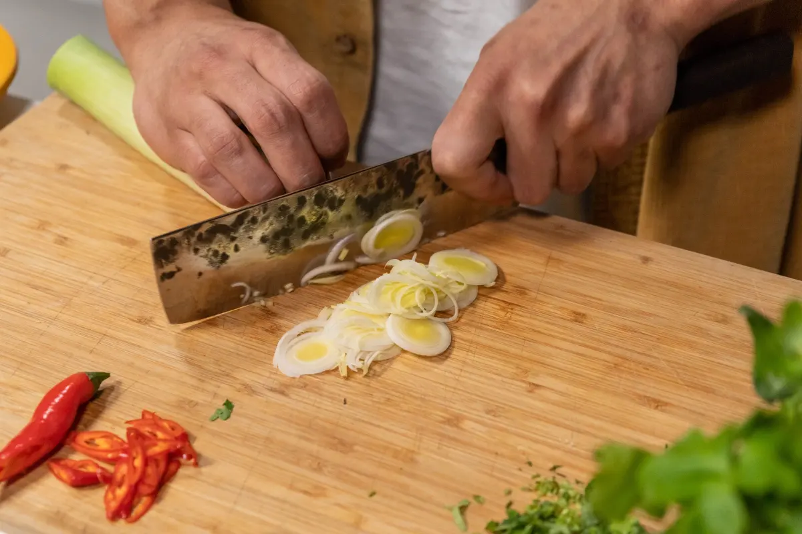

Kai Night
Dinner at three long tables in the main hall every Tuesday evening. Graeme cooks, anyone can come, and it costs nothing, with koha welcome if you can spare some.
17 seats left on Tuesday
The facts
- When
- Tuesdays, 5.30 to 7.30pmDoors open at 5.15pm and dinner is at 5.45pm.
- Cost
- FreeKoha if you can spare some. Nobody checks.
- Where
- The main hallThree long tables, with the kitchen out the back.
- Who runs it
- Graeme PollockGraeme cooks, and Moana Reweti runs the house.
- Who it is for
- AnyoneKids, grown-ups and whole families, ninety seats in all.
- Bring
- NothingA container is handy if you would like to take some home.
One Tuesday, hour by hour
- 3.00Ovens on
- 4.30Onions
- 5.15Doors open
- 5.45Dinner is served
- 6.30Pudding
- 7.00Dishes
- 7.30Doors close

What to expect
Graeme is in the kitchen from three o’clock, and by half past four the onions are on. Doors open at 5.15pm and you can take any seat that is free. If you saved some, give your first name to whoever is at the door.
Dinner is served at 5.45pm, and there is always a vegetarian plate beside the main dish. Pudding comes out at 6.30pm, and you will end up next to someone you have not met.
The dishes start at seven. The dish pit is a good place for a conversation and we are always looking for two people to share it. The doors close at 7.30pm, and the dish pit carries on until half past eight.
Save a seat
73 people are coming and 17 seats are free. Choose how many, add a first name and say what the kitchen should cook around. Your seats stay saved while you look around the site.
To save a seat, email hello@tidestreet.example or call 04 555 0129. You can also just turn up, because doors open at 5.15pm.
This is a demo, so nothing is sent.
Getting in
- Step-free from Tide Street
- An accessible toilet
- A hearing loop in the hall
- A quiet room if the hall gets loud
- Four car parks and two mobility parks at the door
- Vegetarian, gluten free and dairy free plates, if you tell us on the form